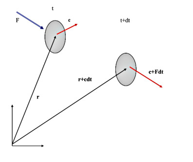

Bir kap içine sıkıştırılmış bir gazın davranışını tanımlamaya çalıştığınızı hayal edin. Makroskopik düzeyde sistem sakin ve durağan görünür; sıcaklık, basınç ve hacim gibi birkaç kararlı özellikle karakterize edilir. Yine de bu sakin yüzeyin altında kaotik bir mikro-alem yatar. Oda sıcaklığında bir metreküp hava, yaklaşık \(10^{25}\) adet bireysel molekül içerir. Bu parçacıkların her biri, komşularıyla saniyede milyarlarca kez çarpışarak, sürekli enerji alışverişi yaparak ve yön değiştirerek, kesintisiz ve çılgın bir hareket halindedir.
Klasik fizik perspektifinden bakıldığında, bu moleküllerin her biri Newton’un hareket yasalarına uymaktadır. Sonsuz hesaplama gücüne sahip mükemmel bir dünyada, tüm \(10^{25}\) parçacık için hareket denklemlerini yazarak konumlarını ve hızlarını zaman içinde takip etmeyi hayal edebiliriz. Deterministik veya yörünge tabanlı tanımlama olarak bilinen bu yaklaşım, moleküler dinamik simülasyonlarının temelidir. Ancak gerçek, makroskopik bir gaz hacmi için bu hayal matematiksel ve fiziksel bir imkânsızlıktır. Veri miktarı inanılmaz derecede büyüktür; üstelik daha da kötüsü, sistem aşırı kaotik bir duyarlılık sergilemektedir. Yalnızca tek bir molekülün başlangıç konumu veya hızındaki mikroskopik bir belirsizlik, art arda gerçekleşen çarpışmalar yoluyla üstel biçimde büyüyerek, bir mikrosaniyenin çok küçük bir kesrinde her türlü kesin uzun vadeli hesabı tamamen anlamsız kılacaktır.
İstatistiksel Bakışa Geçiş
Bireysel yörüngeleri takip edemediğimiz için temel hedefimizi değiştirmemiz gerekir. Belirli bir hıza hangi molekülün sahip olduğunu bilme yolundaki umutsuz arayıştan vazgeçeriz ve bunun yerine çok daha güçlü bir soru sorarız: Ortalama olarak kaç molekül, belirli bir aralıktaki hızlara sahiptir? Bu paradigma değişimi bizi deterministik takipten istatistiksel mekaniğin alanına taşır.
Bunu yapmak için bir hız dağılım fonksiyonu \(f(\vec{v})\) tanımlarız. Ayrık bir sayı listesi yerine, hızı sürekli bir manzara olarak ele alırız. \(f(\vec{v})\) fonksiyonu bir olasılık yoğunluğu olarak işlev görür; herhangi bir andaki anlık görüntüde, bir molekülün belirli bir hızda belirli bir yönde hareket etme olasılığını haritalandırır. Dikkat çekici biçimde, bireysel yörüngeler kaotik ve öngörülemez olsa da bu hızların toplu dağılımı inanılmaz derecede kararlıdır. Termal denge durumunda, sayısız çarpışmanın rastgeleleştirici etkisi tam bir kaos yaratmaz; bunun yerine sistemi son derece düzenli, öngörülebilir ve matematiksel olarak kesin bir hız dağılımına doğru iter. Bu dağılım fonksiyonuna hâkim olarak, tek bir molekülün durumunu hiçbir zaman bilmemize gerek kalmadan makroskopik özellikleri —bir duvara uygulanan basınç, bir delikten geçiş hızı ya da gazın ortalama kinetik enerjisi gibi— hesaplama olanağı elde ederiz. Bu giriş, James Clerk Maxwell’in 1860’ta yanıtlamaya çalıştığı soruyu ortaya koyar: bu kararlı dağılım manzarasının matematiksel şekli nasıl olmalıdır?
Problem Uzayının Tanımlanması: Hız Uzayı
Termal denge halindeki klasik bir makroskopik gazı ele alalım. Bireysel moleküller sürekli hareket etmekte, çarpışmakta ve yön değiştirmektedir. Her bir parçacığı takip edemediğimiz için, üç boyutlu bir sürekli olasılık yoğunluk fonksiyonu tanımlarız:
\[f(v_x, v_y, v_z)\]
Bu fonksiyon, bir molekülün \(\vec{v} = (v_x, v_y, v_z)\) hız vektörüne sahip olma olasılığını bize verir.
Çözümü izole etmek için yalnızca iki temel fiziksel simetriye dayanırız. Başka hiçbir şey varsaymayız.
Aksiyom 1: Eşyönlülük (Istotrophy), yani uzayın tercih ettiği bir yön olmaması.
Gaz denge halindeyse ve üzerine tercihli olarak etki eden dış alanlar (yerçekimi gibi) yoksa, bir molekülün hareket ettiği yön genel olasılığını değiştiremez. Dağılım yalnızca hızın mutlak büyüklüğüyle ilgilenmelidir:
\[v = \sqrt{v_x^2 + v_y^2 + v_z^2}\]
Bu nedenle, 3 boyutlu hız dağılımı yalnızca hızın bir fonksiyonuna indirgenir:
\[f(v_x, v_y, v_z) = f(v)\]
Aksiyom 2: İstatistiksel Bağımsızlık
Bir molekülün x eksenindeki hızının, y veya z eksenlerindeki hız üzerinde sihirli bir etki ya da kısıtlama yaratmadığını varsayarız. Bu bileşenler birbirine dik ve bağımsız olduğundan, ortak olasılık üç bağımsız 1 boyutlu dağılımın çarpımına ayrışmalıdır:
\[f(v_x, v_y, v_z) = \phi(v_x)\phi(v_y)\phi(v_z)\]
Not: Gösterimi sade tutmak ve fonksiyonları birbirine karıştırmamak için, tek bileşenli 1 boyutlu dağılımı temsil etmek üzere \(\phi\), toplam 3 boyutlu hız dağılımını temsil etmek için ise \(f\) kullanıyoruz.
Temel Fonksiyonel Denklem
Aksiyom 1 ile Aksiyom 2’yi eşitlemek bize başlangıç matematiksel manzaramızı verir:
\[f(v) = \phi(v_x)\phi(v_y)\phi(v_z)\]
Fonksiyonel Denklemi Çözme (Türev Numarası)
Birleşik bir değişkene bağlı bir fonksiyonun, ayrı bağımsız değişkenlerin çarpımına eşit olduğu bir denklemimiz var. Bunları birbirinden ayırmak için her iki tarafı da tek bir bileşen olan \(v_x\)’e göre türev alırız [5].
Sol tarafta zincir kuralını kullanarak:
\[ \frac{\partial f(v)}{\partial v_x} = \frac{\ud f(v)}{\ud v} \cdot \frac{\partial v}{\partial v_x} \]
\(v = (v_x^2 + v_y^2 + v_z^2)^{1/2}\) olduğundan, kısmi türevi şudur:
\[ \frac{\partial v}{\partial v_x} = \frac{1}{2}(v_x^2 + v_y^2 + v_z^2)^{-1/2} \cdot 2v_x = \frac{v_x}{v} \]
Bunu sol tarafa geri koyarak ve bağımsız sağ tarafı \(v_x\)’e göre türev alarak (\(v_y\) ve \(v_z\)’yi sabit kabul ederek):
\[f'(v) \cdot \frac{v_x}{v} = \phi'(v_x)\phi(v_y)\phi(v_z)\]
Bunu düzenlemek için her iki tarafı da orijinal fonksiyonel denklemimiz olan \(f(v) = \phi(v_x)\phi(v_y)\phi(v_z)\)’ye böleriz:
\[\frac{f'(v) \cdot \frac{v_x}{v}}{f(v)} = \frac{\phi'(v_x)\phi(v_y)\phi(v_z)}{\phi(v_x)\phi(v_y)\phi(v_z)}\]
Sağ taraftaki eşleşen terimleri sadeleştiririz:
\[\frac{f'(v)}{f(v) \cdot v} \cdot v_x = \frac{\phi'(v_x)}{\phi(v_x)}\]
Son olarak her iki tarafı \(v_x\)’e böleriz:
\[\frac{f'(v)}{f(v) \cdot v} = \frac{\phi'(v_x)}{\phi(v_x) \cdot v_x}\]
Değişkenlerin Ayrılmasının Avantajı
Az önce izole ettiğimiz denkleme dikkatle bakın:
\[\underbrace{\frac{f'(v)}{f(v) \cdot v}}_{\text{Yalnızca } v\text{'ye bağlı}} = \underbrace{\frac{\phi'(v_x)}{\phi(v_x) \cdot v_x}}_{\text{Yalnızca } v_x\text{'e bağlı}}\]
Sol taraf \(v\)’yi içermektedir (\(v_y\) ve \(v_z\)’yi de kapsar). Sağ taraf ise açıkça yalnızca \(v_x\)’e bağlıdır.
\(v_x\)’i tamamen sabit tutarsanız ve \(v_y\)’yi değiştirirseniz, sağ taraf değişemez. Dolayısıyla sol taraf da değişemez. \(v\)’nin bir fonksiyonunun tüm değerler için bir \(v_x\) fonksiyonuyla özdeş biçimde eşit olmasının tek yolu, her iki tarafın da aynı evrensel sabite eşit olmasıdır.
Bu ayırma sabitini \(-2\alpha\) olarak adlandıralım (eksi işareti, matematiğin sonsuz patlamalar yerine bir denge durumu üretmesini sağlar):
\[\frac{\phi'(v_x)}{\phi(v_x) \cdot v_x} = -2\alpha\]
Yeniden düzenleyince bize birinci mertebeden ayrılabilir bir basit (ordinary) diferansiyel denklem verir:
\[\frac{\phi'(v_x)}{\phi(v_x)} = -2\alpha v_x\]
Her iki tarafı \(v_x\)’e göre entegre ederiz:
\[\int \frac{1}{\phi(v_x)} \ud\phi(v_x) = \int -2\alpha v_x \ud v_x\]
\[\ln \phi(v_x) = -\alpha v_x^2 + C\]
1 boyutlu dağılımı çözmek için her iki tarafın üstelini alırız:
\[\phi(v_x) = e^C \cdot e^{-\alpha v_x^2}\]
\(A = e^C\) (normalizasyon sabitimiz) olsun:
\[\phi(v_x) = A e^{-\alpha v_x^2}\]
Uzay esyönlü olduğundan, \(y\) ve \(z\) dağılımları bunu mükemmel biçimde yansıtır:
\[\phi(v_y) = A e^{-\alpha v_y^2}, \quad \phi(v_z) = A e^{-\alpha v_z^2}\]
Bilinmeyenlerin Çözümü (\(A\) ve \(\alpha\))
Başarıyla bir Gauss şekli türettik, ancak \(A\) ve \(\alpha\) sabitleri hâlâ soyuttur. Bunları fiziksel kısıtlamaları kullanarak hesaplamamız gerekir.
Kısıtlama 1: Toplam Olasılık (\(A\)’nın bulunması)
Bir molekülün hız uzayında bir yerde bulunması gerekir. Bu nedenle, olasılığı \(-\infty\)’dan \(+\infty\)’a kadar tüm olası hızlar üzerinden entegre etmek kesinlikle 1’e eşit olmalıdır.
\[\int_{-\infty}^{\infty} \phi(v_x) \ud v_x = 1 \implies A \int_{-\infty}^{\infty} e^{-\alpha v_x^2} \ud v_x = 1\]
Standart Gauss integral özdeşliğini \(\int_{-\infty}^{\infty} e^{-ax^2} \ud x = \sqrt{\frac{\pi}{a}}\) kullanarak:
\[A\sqrt{\frac{\pi}{\alpha}} = 1 \implies A = \sqrt{\frac{\alpha}{\pi}}\]
1 boyutlu dağılımımız güncellenir:
\[\phi(v_x) = \left(\frac{\alpha}{\pi}\right)^{1/2} e^{-\alpha v_x^2}\]
Kısıtlama 2: Ortalama Kinetik Enerji (\(\alpha\)’nın bulunması)
Klasik termodinamikten, tek bir eksen boyunca bir molekülün ortalama öteleme kinetik enerjisinin sıcaklıkla şu şekilde ilişkili olduğunu biliriz:
\[\langle E_x \rangle = \frac{1}{2}m\langle v_x^2 \rangle = \frac{1}{2}kT\]
Burada \(k\) Boltzmann sabiti ve \(T\) sıcaklıktır. Bu, \(\langle v_x^2 \rangle\) beklenti değerinin \(\frac{kT}{m}\)’ye eşit olması gerektiği anlamına gelir.
Olasılık fonksiyonumuzu kullanarak beklenti değerini hesaplayalım:
\[\langle v_x^2 \rangle = \int_{-\infty}^{\infty} v_x^2 \cdot \phi(v_x) \ud v_x = \left(\frac{\alpha}{\pi}\right)^{1/2} \int_{-\infty}^{\infty} v_x^2 \, e^{-\alpha v_x^2} \ud v_x\]
\(\int_{-\infty}^{\infty} x^2 e^{-ax^2} \ud x = \frac{1}{2a}\sqrt{\frac{\pi}{a}}\) Gauss özdeşliğini kullanarak:
\[\langle v_x^2 \rangle = \left(\frac{\alpha}{\pi}\right)^{1/2} \cdot \left(\frac{1}{2\alpha}\sqrt{\frac{\pi}{\alpha}}\right) = \frac{1}{2\alpha}\]
Şimdi türettiğimiz beklenti değerini termodinamik gerçeğimizle eşitleriz:
\[\frac{1}{2\alpha} = \frac{kT}{m} \implies \alpha = \frac{m}{2kT}\]
\(\alpha\)’yı \(A\) denklemimize geri koyabiliriz:
\[A = \left(\frac{m}{2\pi kT}\right)^{1/2}\]
Tam 3 Boyutlu Hız Dağılım Fonksiyonunun Oluşturulması
Üç 1 boyutlu dağılımı çarparak (\(\phi(v_x)\phi(v_y)\phi(v_z)\)) toplam 3 boyutlu hız dağılımını elde ederiz:
\[ f(v_x, v_y, v_z) = \left(\frac{m}{2\pi kT}\right)^{3/2} e^{-\frac{m(v_x^2 + v_y^2 + v_z^2)}{2kT}} = \left(\frac{m}{2\pi kT}\right)^{3/2} e^{-\frac{mv^2}{2kT}} \]
Sert küresel parçacıklardan oluşan ve büyük hızlarla hareket eden seyrek bir gaz düşünelim. Parçacıkların etkileşimlerini yalnızca elastik çarpışmalarla sınırlandırıyoruz. Varsayım olarak herhangi bir anda her bir parçacığın konum vektörünü ve hızını bilmek mümkün olabilir. Bu tür bilgi, sistemin tam dinamik durumunu verir ve klasik mekanikle birlikte tüm gelecekteki durumların tam olarak tahmin edilmesine olanak tanır [1]. Ancak gerçekçi bir simülasyonda bu tür bir takip, muazzam hesapsal kaynakları gerektirir.
Ama alternatif olarak sistemi bir dağılım fonksiyonu \(f(r, c, t)\) ile tanımlayabiliriz. Burada dağılım, koordinatların konum, hız vektörleri ve zamandan oluştuğu bir “faz uzayı”nda yer alır. İstatistiksel Mekanik, \(f(r, c, t)\) dağılımının belirli bir konum ve hıza sahip herhangi bir molekülü bulma olasılığını verdiği istatistiksel bir imkan sunar.
Not: Elbette dağılım fonksiyonları, temel olasılıkta olduğu gibi, belirli bir \(r, c, t\) değeri için tek bir olasılık vermiyor, gerçek olasılıklar için bölgelerden söz ederiz (faz uzayının); örneğin \(r\) ile \(r+\Delta r\) arasındaki bir alan. \([r, r + \Delta r]\) hacim elemanında yer alan ve hızları \([c, c + \Delta c]\) aralığında olan \(f(c, r, t)\Delta c \Delta r\) kadar molekül bulunduğunu söyleyebiliriz. Hızlar \(c\) için “aralık” ifadesi garip gelebilir; ancak ilgilendiğimiz faz uzayında durum tam olarak budur. Diyelim ki \((2, 1)\) noktasında ve çevresindeki \(\Delta r\) içinde yalnızca \(c = (3, 4)\) hızına sahip tek bir molekül yoktur. Orada bir “bulut” vardır.
\(f(r, c, t)\Delta r\) fonksiyonu, o tek noktadaki her olası hız vektörü için sayıyı verir.
Kuvvet Uygulamak, Dinamikleri Değiştirmek
Şimdi bu sisteme \(F\) ile temsil edilen bir kuvvet uygulandığında ne olduğunu düşünelim. Bu kuvvet bir alan niteliğinde olacaktır; her yerde hissedilen \(F(r)\) kuvvetidir. \(t\) anında mevcut bir hız da vardır. Şimdilik moleküller arasındaki iç çarpışmaları göz ardı edeceğiz.

Bu değişiklikleri \(f\) üzerinde yansıtmamız gerekir. Hareket eden bir parçacığın konumu \(x\) ve hızı \(c\) zamanın \(t\) açık birer fonksiyonu olduğundan, dağılım fonksiyonu \(f(x(t), c(t), t)\) olarak yazılabilir.
\[\ud f = \frac{\partial f}{\partial t}\ud t + \frac{\partial f}{\partial r}\ud r + \frac{\partial f}{\partial c}\ud c\]
\(f\)’nin zamanla doğrudan nasıl değiştiğini (şimdilik dış kuvvet olmaksızın) öğrenmek istiyorsak, standart çok değişkenli zincir kuralını kullanarak toplam türevini alırız. \(f\)’nin zamanla değişen üç bileşeni olduğundan (konum, hız ve zamanın kendisi), diferansiyel hesabın zincir kuralı bunu üç temiz parçaya ayırır:
\[\frac{\ud f}{\ud t} = \frac{\partial f}{\partial t} + \frac{\partial f}{\partial r}\frac{\ud r}{\ud t} + \frac{\partial f}{\partial c}\frac{\ud c}{\ud t}\]
Daha sonra uygulanan \(F\) kuvvetini hesaba katarak bu takip türevlerinin gerçek fiziksel tanımlarını yerine koyarız.
Zaman: \(\frac{\ud t}{\ud t}\) yalnızca 1’dir.
Hız: \(\frac{\ud x}{\ud t}\), hızın \((v)\) tanımıdır.
İvme: \(\frac{\ud c}{\ud t}\), ivmenin tanımıdır; Newton’un İkinci Yasası bunu \(\frac{F}{m}\) olarak tanımlar.
Bu değerleri doğrudan zincir kuralına koyarak şunu elde ederiz:
\[ = \frac{\partial f}{\partial t} + c \cdot \frac{\partial f}{\partial x} + \frac{F}{m} \cdot \frac{\partial f}{\partial c} \]
Yukarıdaki denklem Boltzmann taşıma denklemi olarak bilinir [2, sf. 27]. Vektör gösterimi ile:
\[ \frac{\ud f}{\ud t} = \frac{\partial f}{\partial t} + c \cdot \frac{\partial f}{\partial r} + \frac{F}{m}\frac{\partial f}{\partial c} \tag{1} \]
Bu formülasyon çarpışma olmadığını varsaydı. Bu durumda, \(\ud f/\ud t\) aracılığıyla değişimden sonra yeni konumlarındaki \(f(r, c, t)\) parçacıklarını takip ettiğimizde dağılım tamamen aynı kalırdı. Dolayısıyla \((1)\) için \(\ud f/\ud t = 0\) diyebiliriz. Ancak çarpışmalar söz konusu olsaydı, bunu formülasyona sağ tarafta bir \(\Omega\) aracılığıyla dahil etmemiz gerekirdi:
\[ \frac{\partial f}{\partial t} + c \cdot \frac{\partial f}{\partial r} + \frac{F}{m}\frac{\partial f}{\partial c} = \Omega \]
Boltzmann Taşıma Denklemi için Alternatif Yollar
Denklem (1)’e ulaşmanın başka bir yolu daha vardır. Birim kütleli bir gaz molekülüne etki eden dış bir \(F\) kuvveti, molekülün hızını \(c\)’den \(c + F\ud t\)’ye ve konumunu \(r\)’den \(r + c \ud t\)’ye değiştirecektir. Dış kuvvet uygulanmadan önceki \(f(r, c, t)\) molekül sayısı, moleküller arasında hiçbir çarpışma gerçekleşmemesi halinde, bozulma sonrasındaki molekül sayısı olan \(f(r + c\ud t,\, c + F\ud t,\, t + \ud t)\)’ye eşittir.
[3, sf. 46] şöyle ifade eder: Her molekülün, \(r\) ve \(t\)’nin bir fonksiyonu olabilen ancak \(c\)’nin fonksiyonu olmayan dış bir \(mF\) kuvvetine maruz kaldığı bir gazı ele alalım. \(t\) ile \(t + \ud t\) zamanları arasında, başka bir molekülle çarpışmayan herhangi bir molekülün \(c\) hızı \(c + F\ud t\)’ye, konum vektörü \(r\) ise \(r + c\ud t\)’ye değişecektir. \(t\) anında \([r, r + \ud r]\) hacim elemanında yer alan ve hızları \([c, c + \ud c]\) aralığında olan \(f(c, r, t)\ud c\ud r\) kadar molekül vardır. \(\ud t\) aralığından sonra, çarpışmaların etkisi göz ardı edilebilseydi, aynı moleküller ve yalnızca onlar, \([r + c\ud t,\, r + c\ud t + \ud r]\) hacmini dolduran ve hızları \([c + F\ud t,\, c + F\ud t + \ud c]\) aralığında olan kümeyi oluştururdu.
Sonuç olarak şunu elde ederiz:
\[ f(c + F\ud t,\, r + c\ud t,\, t + \ud t) \ud c\ud r = f(c, r, t) \ud c\ud r \]
Zaman Diferansiyelini İzole Etmek: Cebirsel değişime başlamak için denklemin her iki tarafını toplam diferansiyel hacim elemanı \(\ud c\ud r\ud t\)’ye böleriz. \(\ud c\) ve \(\ud r\) her iki tarafta çarpan olarak göründüğünden hemen sadeleşir:
\[\frac{f(c + F\ud t,\, r + c\ud t,\, t + \ud t) - f(c, r, t)}{\ud t} = 0\]
Şimdi, sol tarafın \(\ud t \to 0\) limitini değerlendirmemiz gerekir. Bunu yapmak için kaydırılmış \(f(c + F\ud t,\, r + c\ud t,\, t + \ud t)\) fonksiyonunu açmamız gerekiyor. Çok değişkenli Taylor açılımı ile bunu yapabiliriz. Taban koordinatlarından biraz uzakta kaydırılmış bir fonksiyonu değerlendirmek için birinci mertebeden çok değişkenli Taylor serisi açılımı lazım.
Bağımsız değişkenlere \((x_1, x_2, x_3, \ldots)\) bağlı genel bir \(f\) fonksiyonu için, \((a_1, a_2, a_3, \ldots)\) taban noktası etrafındaki resmi birinci mertebe Taylor açılımı açık koordinat farklarıyla şöyle yazılır:
\[f(x_1, x_2, \ldots) \approx f(a_1, a_2, \ldots) + \frac{\partial f}{\partial x_1}(x_1 - a_1) + \frac{\partial f}{\partial x_2}(x_2 - a_2) + \ldots\]
Dağılım fonksiyonumuz \(f\), yedi ayrı değişkene bağlı olduğundan — üç konum koordinatı \((x, y, z)\), üç hız koordinatı \((u, v, w)\) ve zaman \((t)\) — resmi ders kitabı açılımı şöyle görünür:
\[f(x,y,z,u,v,w,t) \approx f(a_x,a_y,a_z,a_u,a_v,a_w,a_t) + \frac{\partial f}{\partial x}(x-a_x) + \frac{\partial f}{\partial y}(y-a_y) + \frac{\partial f}{\partial z}(z-a_z) + \frac{\partial f}{\partial u}(u-a_u) + \frac{\partial f}{\partial v}(v-a_v) + \cdots\]
Fiziksel sistemimizde, taban noktamızı ve kaydırılmış değerlendirme noktamızı oluşturmak için koordinatları eşleştiririz:
Şimdi zorunlu ders kitabı çıkarma terimlerinin \((x - a_x)\), \((y - a_y)\) vb. fiziksel büyüklerimize nasıl dönüştüğüne bakın:
Bu tam varyasyonları resmi Taylor açılımı formülüne geri koyarak şunu elde ederiz:
\[f(c+F\ud t,\, r+c\ud t,\, t+\ud t) \approx f(c,r,t) + \frac{\partial f}{\partial x}(u\ud t) + \frac{\partial f}{\partial y}(v\ud t) + \frac{\partial f}{\partial z}(w\ud t) + \frac{\partial f}{\partial u}(F_x\ud t) + \frac{\partial f}{\partial v}(F_y\ud t) + \frac{\partial f}{\partial w}(F_z\ud t) + \frac{\partial f}{\partial t}(\ud t) + O(\ud t^2)\]
Not: \(O(\ud t^2)\), \(\ud t^2\) veya daha yüksek mertebeden terimlerle orantılı küçük yüksek mertebe matematiksel terimleri temsil eder; limit alınırken bu terimler güvenle sıfıra gider.
Yerine Koyma ve Cebirsel Sadeleştirme: Şimdi yeni genişletilmiş ifadeyi 1. Adımdaki denge denkleminin payına koyarız:
\[\frac{\left[f(c,r,t) + \frac{\partial f}{\partial t}\ud t + \left(u\frac{\partial f}{\partial x} + v\frac{\partial f}{\partial y} + w\frac{\partial f}{\partial z}\right)\ud t + \left(F_x\frac{\partial f}{\partial u} + F_y\frac{\partial f}{\partial v} + F_z\frac{\partial f}{\partial w}\right)\ud t + O(\ud t^2)\right] - f(c,r,t)}{\ud t} = 0\]
Payın başındaki özgün \(f(c, r, t)\) dağılım fonksiyonu değerinin payın sonundaki \(-f(c, r, t)\) ile mükemmel biçimde sadeleştiğine dikkat edin:
\[\frac{\frac{\partial f}{\partial t}\ud t + \left(u\frac{\partial f}{\partial x} + v\frac{\partial f}{\partial y} + w\frac{\partial f}{\partial z}\right)\ud t + \left(F_x\frac{\partial f}{\partial u} + F_y\frac{\partial f}{\partial v} + F_z\frac{\partial f}{\partial w}\right)\ud t + O(\ud t^2)}{\ud t} = 0\]
Paydaki \(\ud t\)’ye böleriz; paydaki kalan her terim en az bir \(\ud t\) çarpanı taşımaktadır:
\[= \frac{\partial f}{\partial t} + u\frac{\partial f}{\partial x} + v\frac{\partial f}{\partial y} + w\frac{\partial f}{\partial z} + F_x\frac{\partial f}{\partial u} + F_y\frac{\partial f}{\partial v} + F_z\frac{\partial f}{\partial w} + O(\ud t)\]
Limiti Uygulamak: Son olarak \(\ud t\)’yi sıfıra götürürüz (\(\ud t \to 0\)).
\(O(\ud t)\) içine hapsolmuş herhangi bir yüksek dereceli terimi hâlâ bir \(\ud t\) çarpanı taşıdığından tam olarak \(0\)’a iner. Birinci mertebeden türevler ise \(\ud t\) terimleri zaten temiz biçimde bölündüğünden hiç etkilenmez.
Bu, klasik genişletilmiş Boltzmann Denklemini geride bırakarak cebirsel geçişi tamamlar:
\[= \frac{\partial f}{\partial t} + u\frac{\partial f}{\partial x} + v\frac{\partial f}{\partial y} + w\frac{\partial f}{\partial z} + F_x\frac{\partial f}{\partial u} + F_y\frac{\partial f}{\partial v} + F_z\frac{\partial f}{\partial w}\]
\[= \frac{\partial f}{\partial t} + c \cdot \frac{\partial f}{\partial r} + F \cdot \frac{\partial f}{\partial c}\]
Kaynaklar
[1] Sukop, Lattice Boltzmann Modeling
[2] Mohamad, Lattice Boltzmann Method with Computer Codes, 2nd Edition
[3] Chapman, The Mathematical Theory of Non-Uniform Gases
[4] Gibiansky, Lattice Boltzmann Method
[5] Rodrigues, Deriving the Maxwell-Boltzmann speed distribution function